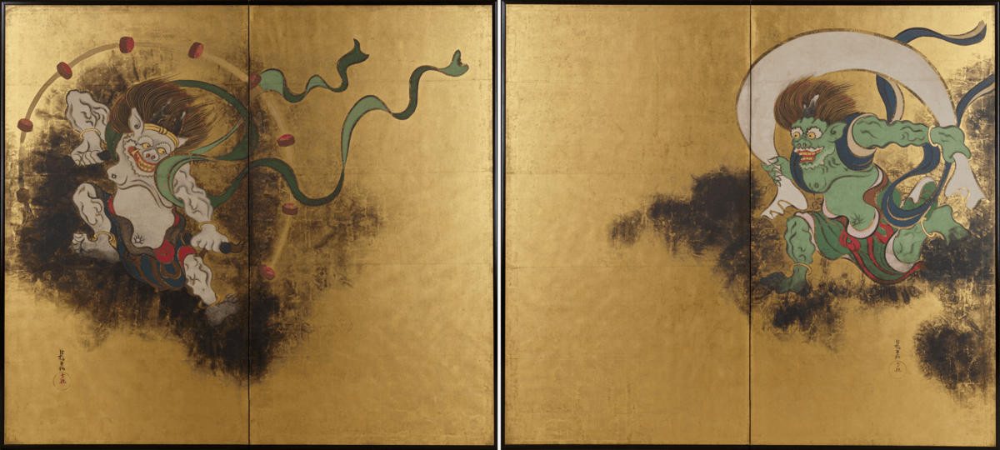

About us
L'art japonais se distingue par sa profondeur et sa beauté minimaliste, combinant des traditions anciennes avec une touche d'innovation moderne. Ses racines plongent dans des siècles d'histoire, s'inspirant de la nature, de la philosophie et de la spiritualité pour exprimer la contemplation et la beauté dans les détails du quotidien. Cette collection de peintures japonaises met en lumière divers styles artistiques, tels que l'ukiyo-e, qui capture la beauté éphémère du monde, ainsi que d'autres œuvres contemporaines reflétant l'élégance et la simplicité caractéristiques de l'esthétique japonaise.

« La Grande Vague de Kanagawa » de nul autre que Katsushika Hokusai. Imaginez que vous attrapez une vague dans le Pacifique, et soudainement le Mont Fuji fait irruption dans votre épopée.

Maintenant, promenons-nous dans un jardin de printemps perpétuel avec Les Iris d’Ogata Kōrin. Imaginez ceci : vous sirotez du thé sous un soleil doré
Accrochez-vous à vos chapeaux car nous allons affronter les dieux d’origine – Fūjin et Raijin. Tawaraya Sotatsu a transformé les cieux en un duel d’écrans pliants à six volets. Les vents tourbillonnent
Passons aux saisons, voulez-vous ? « Feuilles d’Automne » d’Yokoyama Taikan est comme entrer dans une peinture qui est aussi un câlin chaleureux de la Mère Nature. Imaginez que vous marchez sur des feuilles
Maintenant, changeons de vitesse et embrassons l’art de la simplicité avec Ogata Kōrin et ses « Plum Blossoms White et Rouges ». Ce n’est pas seulement une image ; c’est une leçon d’élégance.
Avez-vous déjà imaginé à quoi ressemble une nuit pluvieuse dans le vieux Edo ? Utagawa Hiroshige peint cette image pour vous dans « Pluie de nuit à la double étagère ». Les gouttes de pluie dansent sur les toits, les lanternes vacillent, et vous êtes là, en train de vivre la poésie d’une nuit pluvieuse au Japon.